Photo Gallery
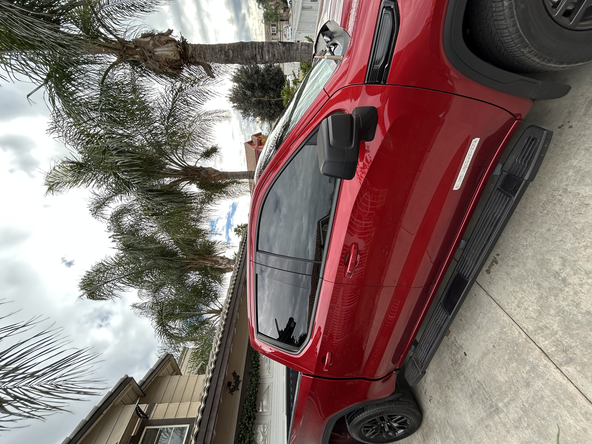
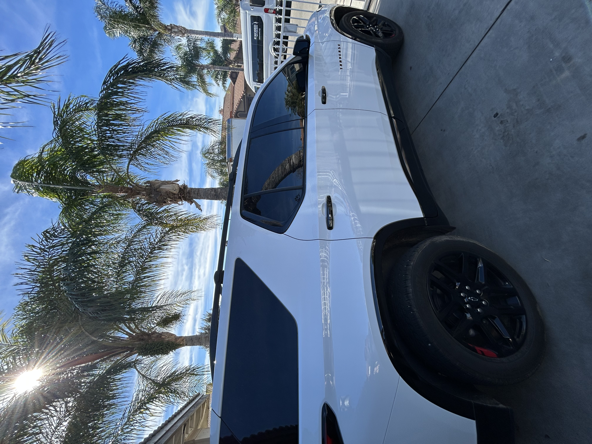
 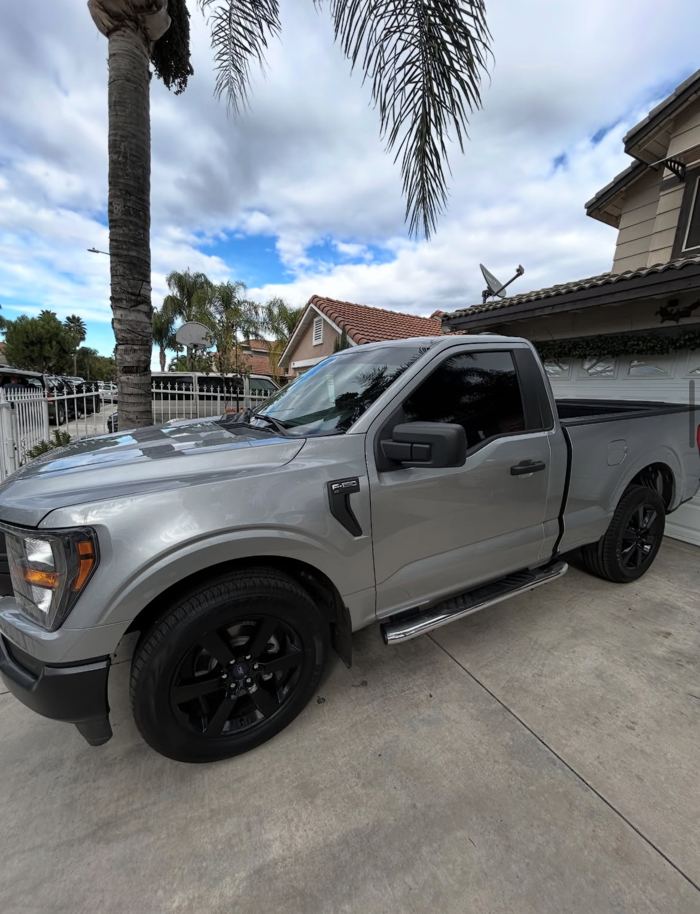
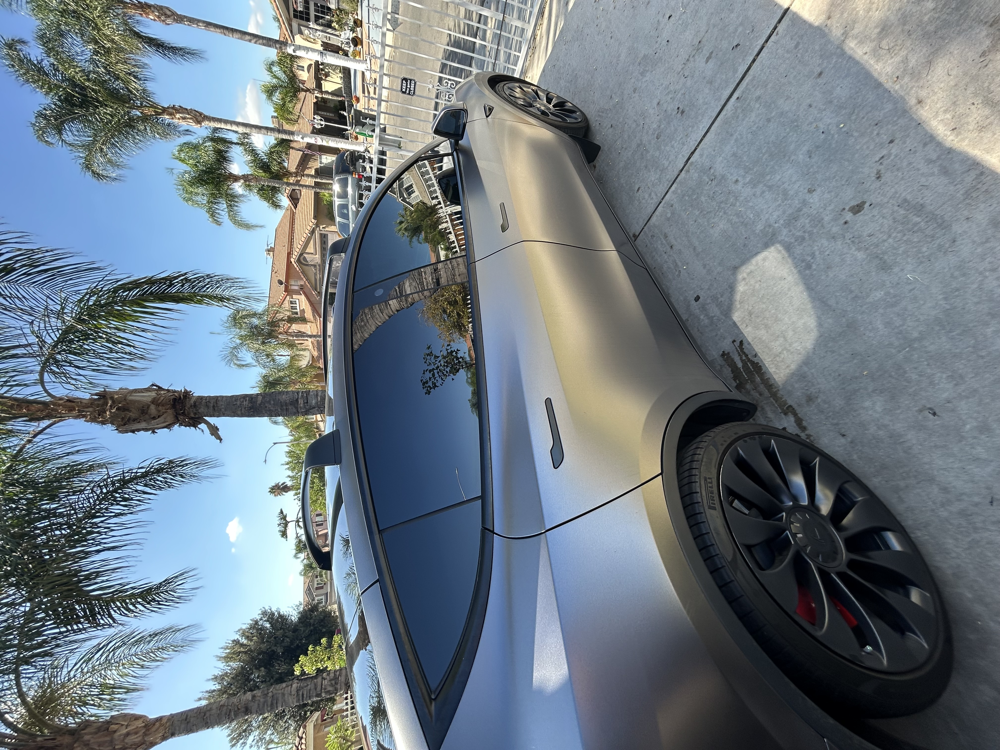
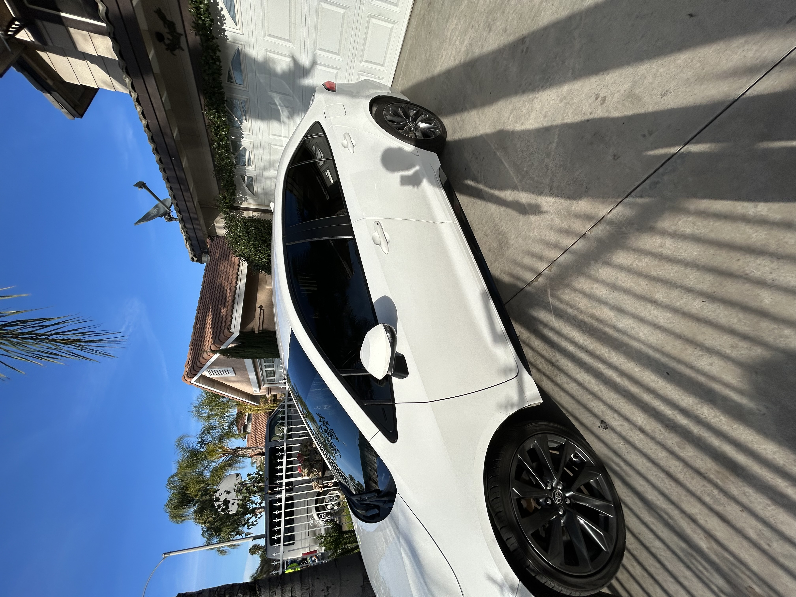
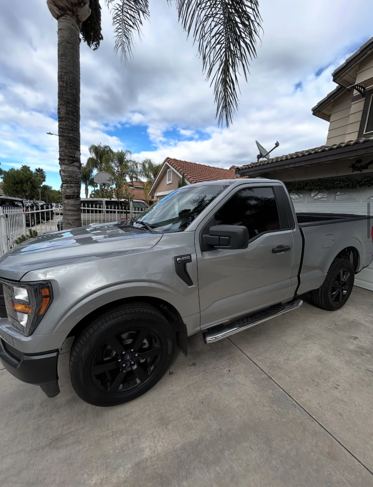
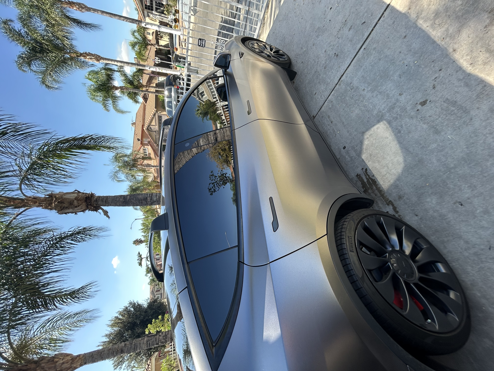
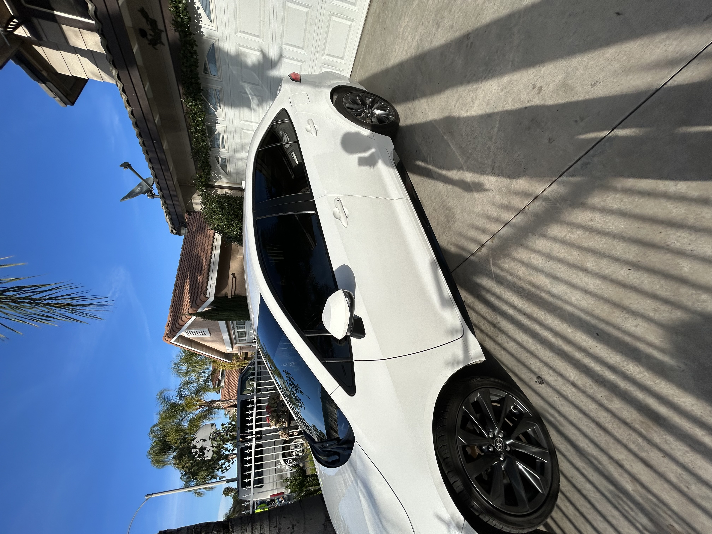
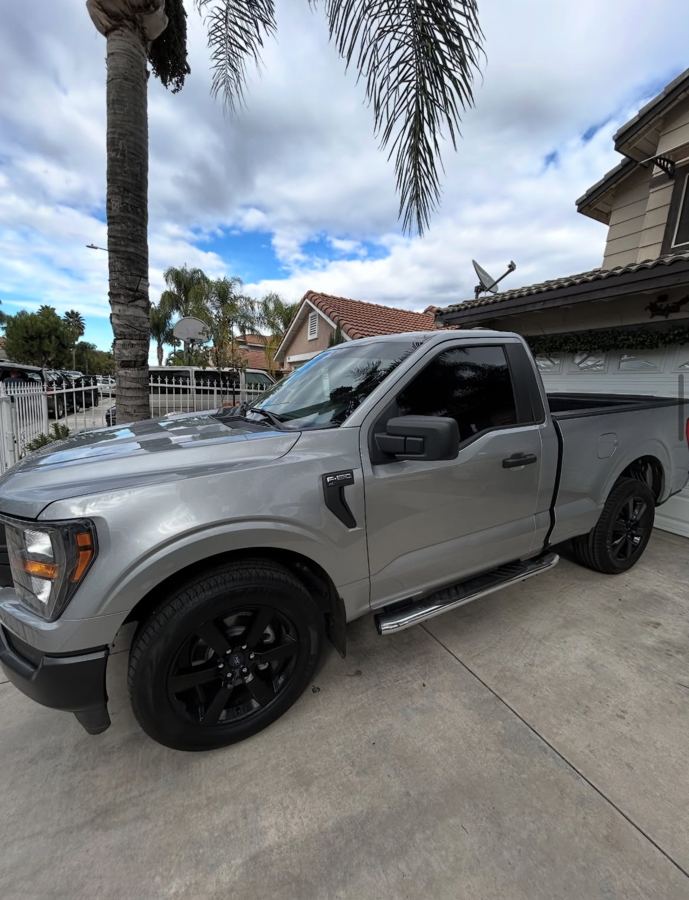
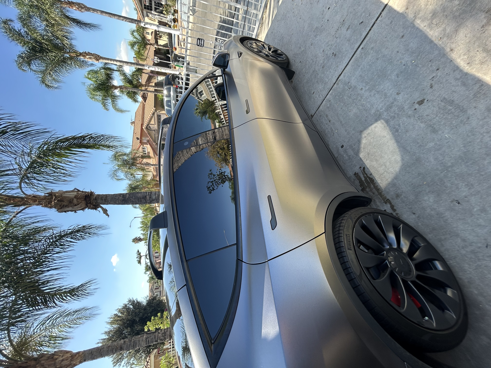
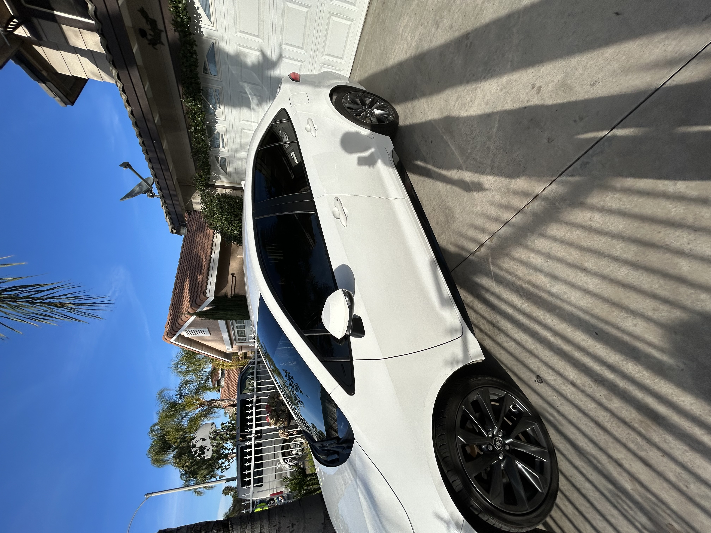
Want yours next? Call or text to schedule an appointment.
Professional automotive window tinting using high-quality Carbon and Ceramic films.
A solid option for added privacy, glare reduction, and a clean appearance. Ideal for everyday driving.
Premium film designed for maximum heat rejection and UV protection while maintaining excellent visibility and comfort.
Offered exclusively in ceramic film for superior heat rejection and clarity. Available as an additional service.
Professional removal of old or failing window tint. Pricing varies based on film condition, age, and adhesive. Pricing varies by condition.
* Front windshield tint is available in ceramic film only. Tint removal pricing varies based on film condition.
Clean installs, quality film options, and honest work—serving Perris and nearby areas.
Perris, CA based. You’ll deal directly with the installer—not a call center.
Choose from carbon and ceramic tint depending on your goals: privacy, heat reduction, or UV protection.
Careful prep, smooth edges, and a clean finish. I treat your car like it’s mine.
Warranty-backed installs for peace of mind. Ask about film coverage and what’s included.
Quick responses and clear scheduling—call or text anytime.
No weird surprises. You’ll get a clear quote based on your vehicle and film choice.
Quick answers to common questions about window tinting.
California tint laws vary by window. Front side windows must allow visible light through, while rear windows can be darker. I’ll explain compliant options during your quote.
Most vehicles are completed the same day. Typical installs take a few hours, depending on the vehicle and number of windows.
Yes. Warranty coverage depends on the film used and protects against defects such as bubbling, peeling, or discoloration.
Yes. Tint can be removed if needed. Pricing depends on film condition, age, and adhesive.
It’s recommended to wait a few days after installation to allow the film to fully cure.
Yes. Front windshield tint is offered in ceramic film only and is available as an add-on service.
* Customers are responsible for complying with all applicable California tint laws.
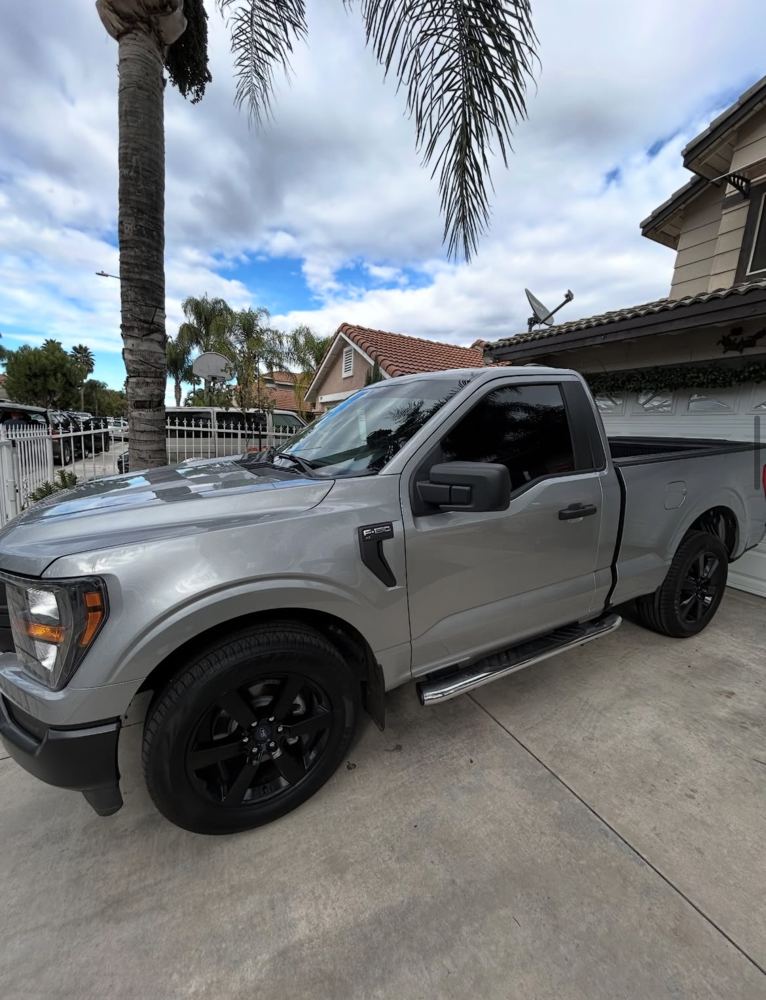
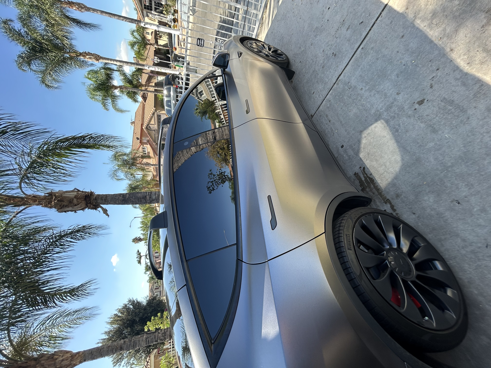
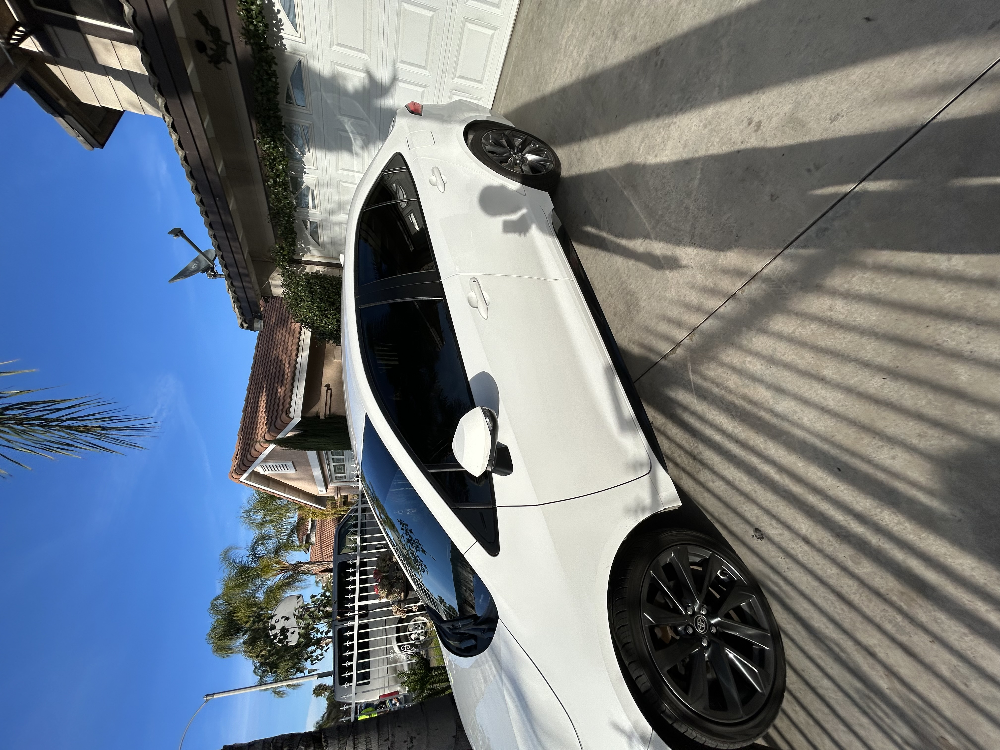
Want yours next? Call or text to schedule an appointment.
Appointment-only • Drop-off service • Most vehicles take 3–4 hours depending on window count
Chimbo’s Window Tint proudly serves Perris, CA and surrounding areas with professional automotive window tinting. We specialize in ceramic and carbon window films designed to reduce heat, protect interiors from UV damage, and enhance privacy.